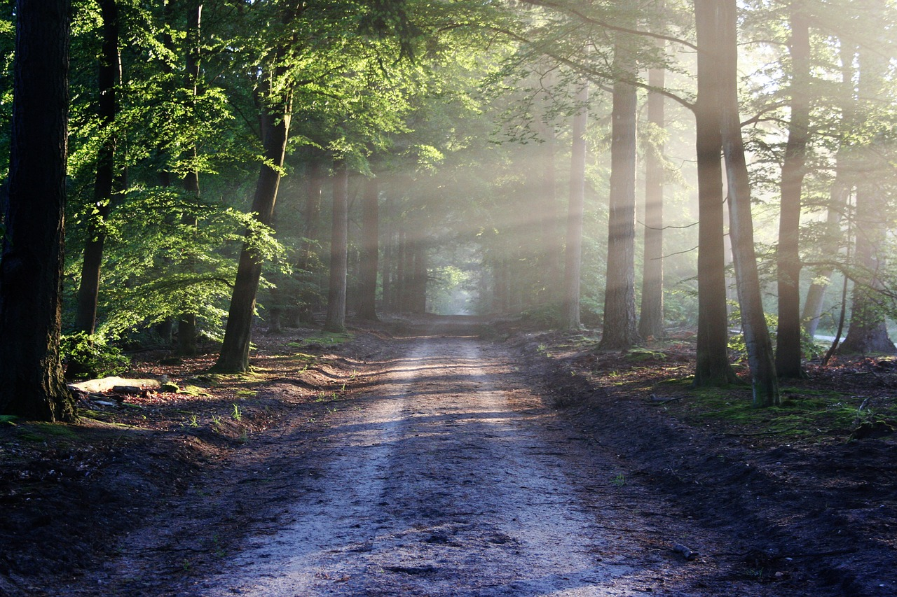

Jade Pladsworth
There is nothing like a cabin in the woods and being connected to mother eather.

Betha McMoreson
My calm times at the lake were the best times in nature for me.

Jake Lagoonie
I always enjoyed getting lost in the woods and finding peace with nature.

Leslie Evermore
I remember getting lost in fields and walking for hours.

Pete McLovin
My favorite time is biking down the trails.`